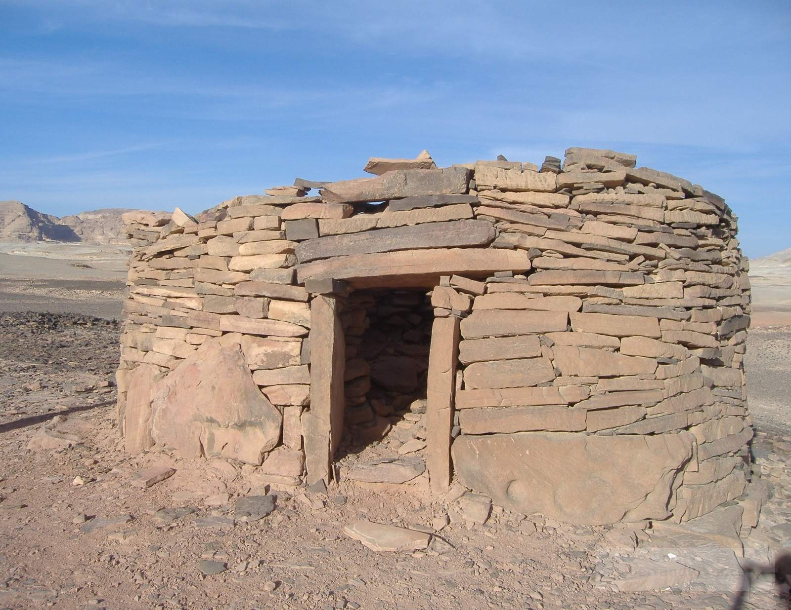

To nie jest wyjazd jogowy. Nie ma nauczyciela ani planu zajęć. Tylko cztery dni w głębi pustyni Synaj, trzy noce pod gwiazdami w jej najstarszych i najcichszych miejscach i tyle czasu, ile potrzebujesz, by medytować, myśleć albo po prostu być. Każda noc przybliża cię do świątyni Hathor, „Pani Turkusu”, gdzie oglądasz zachód słońca, śpisz pod gwiazdami i budzisz się o wschodzie. Przewodnikami są Joseph i Annet, szefowa kuchni Mary gotuje wszystkie posiłki, a resztę robi pustynia.

Szlak Turkusu
Ta podróż ma swoją historię. Zaczynasz przy Nawamis, okrągłych kamiennych grobowcach sprzed około 6000 lat, starszych niż piramidy. Potem wspinasz się do starożytnej Jaskini Turkusu, gdzie Egipcjanie wydobywali niebiesko-zielony kamień ofiarowany bogini. A kończysz przy jej świątyni: Hathor, bogini miłości, muzyki i radości, „Pani Turkusu”, na szczycie góry w Serabit el-Khadim. Niewiele miejsc w Egipcie jest tak starych, tak cichych i tak rzadko odwiedzanych.

Przebieg podróży
- Dzień 1: Dahab → wydma Hiduda → obiad przy Gebel Makhroum (Góra Smocza Głowa) → Nawamis. Popołudnie, zachód słońca i noc w ciszy przy Nawamis
- Dzień 2: medytacja o wschodzie słońca przy Nawamis → przejazd do doliny pod starożytną Jaskinią Turkusu → około godziny podejścia do jaskini, czas w ciszy i zejście. Kolacja i noc w naszym obozie w dolinie
- Dzień 3: przejazd do Serabit el-Khadim. Obiad i spokojny odpoczynek w cieniu. Około 15:00 wchodzimy do świątyni Hathor na zachód słońca, potem kolacja, gwiazdy i noc w naszym obozie przy świątyni
- Dzień 4: wschód słońca przy świątyni → zejście → obiad → powrót do Dahab, przyjazd późnym popołudniem


Nie mówimy ci, jak medytować. Pustynia jest na tyle cicha, że nauczy cię sama.

Nocne niebo i światła
Z dala od miast Serabit el-Khadim i Nawamis mają jedno z najciemniejszych nieb w Egipcie. W pogodną noc widać Drogę Mleczną od horyzontu do horyzontu. Przez lata niektórzy nasi goście i miejscowi Beduini opowiadali, że widzieli tu dziwne światła poruszające się po niebie. My sami ich nie widzieliśmy i niczego nie obiecujemy. Ale Synaj ma długą historię takich opowieści, a w 2022 roku kilku weteranów armii USA powiedziało, że w 2014 roku widzieli niewyjaśnione światła nad granicą Synaju. Przeczytaj historię
Obejrzyj przed wyjazdem
Serabit el-Khadim: kopalnie turkusu i świątynia Hathor
Faraońskie kopalnie turkusu w Serabit el-Khadim
Grobowce Nawamis, starsze niż piramidy
W cenie
- Odbiór i powrót do hotelu w Dahab lub do The Hub
- Prywatny jeep dla waszej grupy na wszystkie 4 dni
- Wszystkie pozwolenia i opłaty dla Beduinów
- Wszystkie posiłki przez 4 dni, gotowane przez szefową kuchni Mary
- Woda, herbata i kawa
- Sprzęt biwakowy: materace, koce i śpiwory
- Wasi przewodnicy, Joseph i Annet
Nie wliczone: sprzęt do obserwacji gwiazd (teleskop lub lornetka), napiwki i wydatki osobiste.
Zabierz ze sobą
- Paszport (na drogach w głębi lądu są punkty kontrolne)
- Dobre buty trekkingowe
- Ciepłe ubrania na noc (w górach robi się zimno)
- Czołówkę
- Wszystko, co pomaga ci medytować: dziennik, szal, poduszkę
Czy ta podróż jest dla ciebie?
Jest dla osób, które bardziej niż wygody potrzebują ciszy. Śpisz na zewnątrz pod gwiazdami, nie ma pryszniców, są dwa strome podejścia po około godzinie, do Jaskini Turkusu i do świątyni. Nie musisz być sportowcem, ale powinieneś móc iść pod górę we własnym tempie. Nie ma programu do wykonania: dołącz do wędrówek albo zostań w obozie i pobądź ze sobą.
Cena
$1 600 za 1–2 osoby · $2 200 za 3–4 osoby
Zarezerwuj podróż
Wyślij nam daty i liczbę osób na WhatsApp. Potwierdzimy terminy i wyślemy bezpieczny link do zapłaty zaliczki. Resztę płacisz w Dahab.
Rezerwuj przez WhatsAppOpinie naszych gości

Rezygnacja
Bezpłatna rezygnacja do 3 dni przed wycieczką. Przy późniejszej rezygnacji pobierana jest pełna cena.